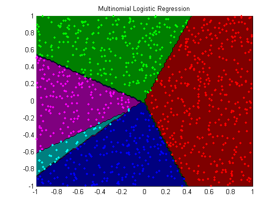

Minfunc Logreg Demo
options.Display = 'none';
setSeed(1);
nClasses = 5;
nInstances = 1000;
nVars = 2;
[X,y] = makeData('multinomial',nInstances,nVars,nClasses);
X0 = X;
X = [ones(nInstances,1) X];
funObj = @(W)SoftmaxLoss2(W,X,y,nClasses);
lambda0 = 1e-4;
lambda = lambda0*ones(nVars+1,nClasses-1);
lambda(1,:) = 0;
fprintf('Training multinomial logistic regression model...\n');
wSoftmax = minFunc(@penalizedL2,zeros((nVars+1)*(nClasses-1),1),options,funObj,lambda(:));
wSoftmax = reshape(wSoftmax,[nVars+1 nClasses-1]);
wSoftmax = [wSoftmax zeros(nVars+1,1)];
opts.maxIter = 2000;
opts.TolX = 1e-7;
opts.TolFun = 1e-7;
model = logregFit(X0, y, 'lambda', lambda0, 'standardizeX', false, 'fitOptions', opts);
wMAP = model.w;
assert(approxeq(wMAP, wSoftmax))
[junk yhat] = max(X*wSoftmax,[],2);
trainErr = sum(yhat~=y)/length(y)
[yhat2, prob] = logregPredict(model, X0);
assert(isequal(yhat, yhat2))
figure;
plotClassifier(X,y,wSoftmax,'Multinomial Logistic Regression');
Training multinomial logistic regression model...
Iteration FunEvals Step Length Function Val Opt Cond
1 3 7.02183e-003 9.52623e+002 6.35052e+002
2 4 1.00000e+000 6.26545e+002 2.98376e+002
3 5 1.00000e+000 4.87923e+002 2.75662e+002
4 6 1.00000e+000 4.13277e+002 1.11728e+002
5 7 1.00000e+000 3.65721e+002 7.34159e+001
6 8 1.00000e+000 3.29580e+002 1.00610e+002
7 9 1.00000e+000 2.78570e+002 5.87822e+001
8 10 1.00000e+000 2.42451e+002 5.58570e+001
9 12 5.51275e-001 1.74692e+002 4.97782e+001
10 13 1.00000e+000 1.48107e+002 2.60018e+001
11 14 1.00000e+000 1.08850e+002 1.58140e+001
12 15 1.00000e+000 8.48440e+001 2.01630e+001
13 16 1.00000e+000 6.54487e+001 1.51321e+001
14 17 1.00000e+000 5.31180e+001 1.19278e+001
15 18 1.00000e+000 4.34340e+001 1.04286e+001
16 19 1.00000e+000 3.72058e+001 4.77741e+000
17 20 1.00000e+000 3.39754e+001 2.94367e+000
18 21 1.00000e+000 3.21080e+001 3.41155e+000
19 22 1.00000e+000 3.10335e+001 3.24108e+000
20 23 1.00000e+000 3.02621e+001 2.10655e+000
21 24 1.00000e+000 2.99177e+001 1.29374e+000
22 25 1.00000e+000 2.98276e+001 8.60236e-001
23 26 1.00000e+000 2.97874e+001 5.56377e-001
24 27 1.00000e+000 2.97761e+001 4.96482e-001
25 28 1.00000e+000 2.97650e+001 4.56991e-001
26 29 1.00000e+000 2.97568e+001 4.41858e-001
27 30 1.00000e+000 2.97487e+001 3.57127e-001
28 31 1.00000e+000 2.97443e+001 3.01549e-001
29 32 1.00000e+000 2.97410e+001 4.26088e-001
30 33 1.00000e+000 2.97376e+001 6.34306e-001
31 34 1.00000e+000 2.97312e+001 8.91071e-001
32 35 1.00000e+000 2.97201e+001 1.16006e+000
33 36 1.00000e+000 2.97016e+001 1.36526e+000
34 37 1.00000e+000 2.96735e+001 1.44378e+000
35 38 1.00000e+000 2.96292e+001 1.42116e+000
36 39 1.00000e+000 2.95752e+001 1.50129e+000
37 40 1.00000e+000 2.95201e+001 1.52927e+000
38 41 1.00000e+000 2.94603e+001 1.67146e+000
39 42 1.00000e+000 2.94094e+001 1.45708e+000
40 43 1.00000e+000 2.93844e+001 1.10940e+000
41 44 1.00000e+000 2.93746e+001 9.87188e-001
42 45 1.00000e+000 2.93674e+001 8.42938e-001
43 46 1.00000e+000 2.93608e+001 8.08474e-001
44 47 1.00000e+000 2.93553e+001 9.36389e-001
45 48 1.00000e+000 2.93515e+001 1.06871e+000
46 49 1.00000e+000 2.93489e+001 1.08391e+000
47 50 1.00000e+000 2.93456e+001 9.68426e-001
48 51 1.00000e+000 2.93405e+001 6.93572e-001
49 52 1.00000e+000 2.93360e+001 3.39953e-001
50 53 1.00000e+000 2.93329e+001 2.03164e-001
51 54 1.00000e+000 2.93316e+001 2.64232e-001
52 55 1.00000e+000 2.93309e+001 2.09607e-001
53 56 1.00000e+000 2.93306e+001 1.55904e-001
54 57 1.00000e+000 2.93305e+001 1.24386e-001
55 58 1.00000e+000 2.93303e+001 1.11028e-001
56 59 1.00000e+000 2.93300e+001 1.04294e-001
57 60 1.00000e+000 2.93292e+001 1.37518e-001
58 61 1.00000e+000 2.93275e+001 2.19411e-001
59 62 1.00000e+000 2.93242e+001 3.74208e-001
60 63 1.00000e+000 2.93174e+001 5.30140e-001
61 64 1.00000e+000 2.93044e+001 6.21557e-001
62 65 1.00000e+000 2.92882e+001 5.61887e-001
63 66 1.00000e+000 2.92815e+001 1.73620e-001
64 67 1.00000e+000 2.92798e+001 5.79105e-002
65 68 1.00000e+000 2.92795e+001 7.02638e-003
66 69 1.00000e+000 2.92795e+001 3.07036e-003
67 70 1.00000e+000 2.92795e+001 3.36369e-004
Directional Derivative below TolX
trainErr =
0.0030
